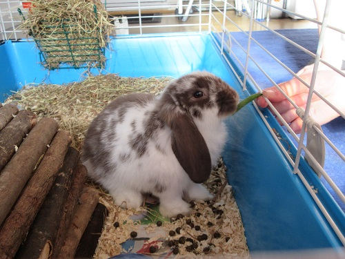
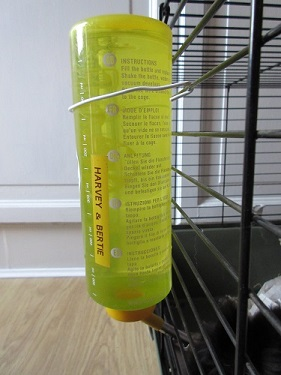
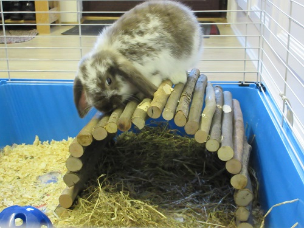

It is best to choose a rabbit about 6-8 weeks old as then they will have just left their mother so is the best time to bond with them. They should have bright eyes, teeth clean and straight, no staining under tail (should be white), glossy coat, clean ears, not scratching, not breathing heavily or not naturally, eyes, nose or ears aren't running, no dry skin or sore spots, back feels firm, not too fat or thin and no cuts, lumps or bald patches. You should also go for the most lively and playful of the bunch.

It is important to give your rabbit a balanced diet not to over feed them or under feed them. As you can see on the diagram most of their food should be hay and grass so you must always give them lots of fresh hay in the morning and put it in their tray. Also put some in their bed and if you are ever taking them anywhere in a create make sure you line the bottom with hay. Rabbits also like eating grass when you put them in the run. As well as hay and grass you can see that they should also have a bit of raw vegetables like celery, peas, carrots, broccoli, parsnips, cauliflower and you could also try some radishes which rabbits like to chew on in big chunks. You should give them this in the afternoon or early evening. Rabbits can occasionally have fruit as a treat about once a month as it can make them ill especially strawberries and raspberries as they are soft fruit. Rabbits should not have many pellets and it should only be 5% of their diet but when you first get your rabbit you should give them a lot and they will eat as much as they want but when they reach 6 months old you should only give them a few teaspoons of pellets because they might get fat. You could also hide a few pieces of food for them and let them try and find it as a bit of fun and they will have to sniff them out. Remember at the end of the day to put the food that they didn't eat in the bin. Also like food you should fill their water bottle up with fresh water every day. You can attach a water bottle to the hutch and put it at the right height for your rabbit to drink out of.
 Rabbits are most active in the morning and evening and love playing in flower pots and drain pipes as they like playing with them and hiding in them but make sure they are big enough to fit in. Rabbits also like willow balls and balls with bells in as they make noise. You could also make a little agility course for them and make them craw through tunnels. Also make sure they have something to shelter under in case it rains. You can put them in a digging box as rabbits like to dig and create burrows like in the wild by digging with their front paws and pushing the soil away with their back feet so if you fill a tub with soil then they can dig in the tub. You must groom your rabbit once a week and in the spring and autumn they shed more so you should brush them more like every day to get any loose fur off. When your rabbit flicks out his paw it means they are about to groom themselves and you should leave them alone to groom.
To find out more contact us at: